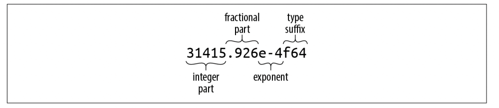
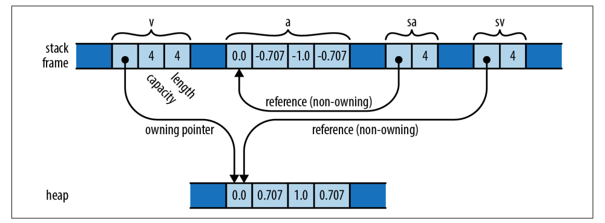
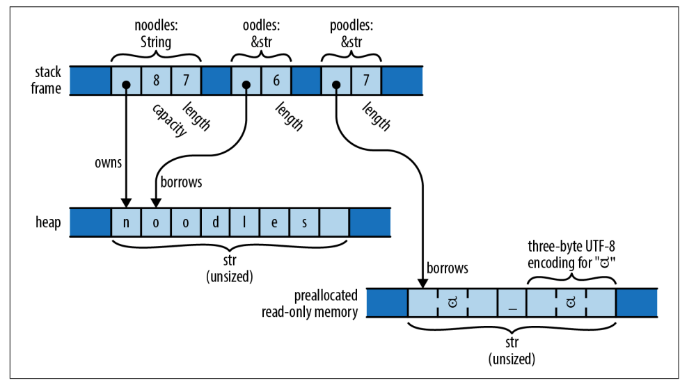

【Rust】基础类型
下面是在 Rust 中会看到的类型的总结，展示了Rust的基本类型，标准库中一些非常常见的类型，以及一些用户定义类型的例子。
| Type | Description | Values |
|---|---|---|
i8, i16, i32, i64, i128 u8, u16, u32, u64, u128 |
给定宽度的有符号和无符号整数 | 42,-5i8, 0x400u16, 0o100i16, 20_922_789_888_000u64, b'*' |
isize, usize |
有符号整数和无符号整数， 与计算机上的地址大小相同(32位或64位) | 137, -0b0101_0010isize, 0xffff_fc00usize |
f32, f64 |
IEEE浮点数，单精度和双精度 | 1.61803, 3.14f32, 6.0221e23f64 |
bool |
Boolean | true，false |
char |
Unicode字符，32位宽 | '*', '\n', '字', '\x7f', '\u{CA0}' |
(char, u8, i32) |
Tuple:允许混合类型 | ('%', 0x7f, -1) |
() |
空元组 | () |
struct S { x: f32, y: f32 } |
字段带名称的复合结构 | S { x: 120.0, y: 209.0 } |
struct T (i32, char); |
Tuple-like struct | T(120, 'X') |
struct E; |
Unit-like struct; has no fields |
E |
enum Attend { OnTime, Late(u32) } |
枚举 | Attend::Late(5), Attend::OnTime |
Box<Attend> |
Box:拥有指向堆中的值的指针 |
Box::new(Late(15)) |
&i32, &mut i32 |
共享引用和可变引用:非拥有指针，不能比它们的引用活得更久 | &s.y, &mut v |
String |
动态大小的UTF-8字符串 |
"ラーメン: ramen".to_string() |
&str |
Reference to str: non-owning pointer to UTF-8 text |
"そば: soba", &s[0..12] |
[f64; 4], [u8; 256] |
数组，固定长度，元素同类型 | [1.0, 0.0, 0.0, 1.0], [b' '; 256] |
Vec<f64> |
变长Vector，元素同类型 |
vec![0.367, 2.718, 7.389] |
&[u8],&mut [u8] |
对slice的引用:对数组或vector的一部分的引用，包括指针和长度 |
&v[10..20], &mut a[..] |
Option<&str> |
可选值，要么是 None，要么是 Some(v) |
Some("Dr."), None |
Result<u64, Error> |
可能失败的操作结果，成功就是 Ok(v)，失败则是：Err(e) |
Ok(4096), Err(Error::last_os_error()) |
&dyn Any, &mut dyn Read |
Trait对象:引用任何实现了给定方法集的值 |
value as &dyn Any,&mut file as &mut dyn Read |
fn(&str) -> bool |
函数指针 | str::is_empty |
(Closure types have no written form) |
闭包 | ` |
整数类型
固定宽度的数字类型可能会溢出或失去精度，但它们对于大多数应用程序来说已经足够了，并且可能比任意精度整数和有理素数等表示快数千倍。如果需要这些功能，可以使用 num。Rust 的类型名称中包含了他们代表的宽度和用途。
| 大小 | 无符号整数 | 有符号整数 | 浮点数 |
|---|---|---|---|
8 |
u8 |
i8 |
|
16 |
u16 |
i16 |
|
32 |
u32 |
i32 |
f32 |
64 |
u64 |
i64 |
f64 |
128 |
u128 |
i128 |
|
Machine word |
usize |
isize |
Rust 有符号数的范围如下：
| 类型 | 范围 |
|---|---|
i8 |
~ (−128 ~ 127) |
i16 |
~ (−32,768 ~ 32,767) |
i32 |
~ (−2,147,483,648 ~ 2,147,483,647) |
i64 |
~ (−9,223,372,036,854,775,808 ~ 9,223,372,036,854,775,807) |
i128 |
~ (roughly ~ ) |
isize |
~ , 或者 ~ |
Rust 无符号数的范围如下：
| 类型 | 范围 |
|---|---|
u8 |
0 ~ (0 ~ 255) |
u16 |
0 ~ (0 ~ 65,535) |
u32 |
0 ~ (0 ~ 4,294,967,295) |
u64 |
0 ~ (0 ~ 18,446,744,073,709,551,615) |
u128 |
0 ~ (0 ~ around ) |
usize |
0 ~ , 或者 0 ~ |
usize和isize类型类似于C和C++中的size_t和ptrdiff_t，它们的大小和机器架构有关系，要么是 32位 要么是 64位。Rust要求数组索引为usize值，表示数组或vector大小或某些数据结构中元素数量计数的值通常也具有usize类型。
数字字面量可以用一个后缀表示它们的类型，例如：42u8，1729isize。如果没有类型后缀，Rust 会在赋值，函数调用或者比较的时候才确定其类型，也就是根据使用场景将它确定为合适的类型。最后，如果没有指定类型，并且多种类型也都可行，那么默认 i32，否则，就会报告错误。
数字字面量可以用前缀 0x，0o 或者 0b 表示 16进制，8进制 或者 2进制数值。
为了在表示长数字时更具可读性，可以在数字之间插入下划线 _。例如我们可将 u32 的最大值表示为 4_294_967_295。下划线的位置并不重要，例如，我们可以在表示16进制数字和2进制数字，以 0xffff_ffff 的形式进行分割，或者用 _ 分割数值和类型 127_u8。
在 Rust 中，可以将字符表示为 u8 类型，例如用 b'X' 表示字母 X，65 和 b'A' 是完全相等的。对于一些字符不能直接表示，需要转义：
| 字符 | 字面量 | 等价数值 |
|---|---|---|
| 单引号 | b'\'' |
39u8 |
| 反斜线 | b'\\' |
92u8 |
| 换行键 | b'\n' |
10u8 |
| 回车键 | b'\r' |
13u8 |
| 水平制表符 | b'\t' |
9u8 |
对于一些很难表示的字符，可以用16进制表示，形式为 b'\xHH'。例如，ASCII 码，27 代表的 ESC (Escape)，我们可以表示为 \x1b。
对于数值之间的类型转换，可以使用 as 操作符：
1 | assert_eq!(10_i8 as u16, 10_u16); // in range |
标准库提供了很多整数操作方法，例如：
1 | fn main() { |
更多可以去看每个标准库每个类型的方法，例如 i16。
真实编码情况下，我们编码的时候一般不会写类型后缀，但是像下面这样调用方面就会报错:
1 | fn main() { |
原因是：
error[E0689]: can't call method `abs` on ambiguous numeric type `{integer}`
这可能会有点令人困惑：所有有符号整数类型都有 abs方法，那么有什么问题呢？出于技术原因，Rust 想知道一个值在调用该类型自己的方法之前具有哪个整数类型。i32的默认值只适用于在所有方法调用解决后，类型仍然不明确的情况，所以在这里已经太晚了，没有帮助。解决方案是用后缀或使用特定类型的函数来阐明打算使用哪种类型：
1 | fn main() { |
因为方法调用比一元操作符优先级高，所以我们需要将操作数用括号包括，否则 -4_i32.abs() 的结果将是 -4。
溢出处理
当整数计算溢出时，debug 模式下，程序会奔溃。release 模式下，程序会一直运行，只是结果就不可期望了。对于下面的测试代码，我们使用两种不同的模式进行运行:
1 | fn main() { |
使用 cargo run 命令时程序会崩溃（默认 debug），但使用 cargo run --release 时会一直运行。默认行为或许不是我们想要的，那么我们可以显示地表达我们的意图：
-
checked相关的方法会检查运算结果，如果数学上是正确的，那么就是会返回Some(v)，否则，会返回None：1
2
3
4
5
6
7
8
9
10
11
12
13
14fn main() {
// The sum of 10 and 20 can be represented as a u8.
assert_eq!(10_u8.checked_add(20), Some(30));
// Unfortunately, the sum of 100 and 200 cannot.
assert_eq!(100_u8.checked_add(200), None);
// Do the addition; panic if it overflows.
let sum = x.checked_add(y).unwrap();
// Oddly, signed division can overflow too, in one particular case.
// A signed n-bit type can represent -2n−1, but not 2n−1.
assert_eq!((-128_i8).checked_div(-1), None);
} -
wrappingoperations return the value equivalent to the mathematically correct result modulo the range of the value：1
2
3
4
5
6
7
8
9
10
11
12
13
14
15fn main() {
// The first product can be represented as a u16;
// the second cannot, so we get 250000 modulo 216.
assert_eq!(100_u16.wrapping_mul(200), 20000);
assert_eq!(500_u16.wrapping_mul(500), 53392);
// Operations on signed types may wrap to negative values.
assert_eq!(500_i16.wrapping_mul(500), -12144);
// In bitwise shift operations, the shift distance
// is wrapped to fall within the size of the value.
// So a shift of 17 bits in a 16-bit type is a shift
// of 1.
assert_eq!(5_i16.wrapping_shl(17), 10);
} -
Saturating相关的操作在溢出时会用类型最大值表示结果：1
2
3
4
5fn main() {
assert_eq!(254_u8.saturating_add(10), 255);
assert_eq!(32760_i16.saturating_add(10), 32767);
assert_eq!((-32760_i16).saturating_sub(10), -32768);
} -
Overflowing相关的操作会返回一个tuple(result, overflowed)，其中result是wrapping将返回的内容，overflowed指示是否发生了溢出：1
2
3
4fn main() {
assert_eq!(255_u8.overflowing_sub(2), (253, false));
assert_eq!(255_u8.overflowing_add(2), (1, true));
}
操作名称都以下面的前缀开始：checked_, wrapping_, saturating_, 或者 overflowing_，相关的操作有：
| Operation | Name suffix | Example |
|---|---|---|
Addition |
add |
100_i8.checked_add(27) == Some(127) |
Subtraction |
sub |
10_u8.checked_sub(11) == None |
Multiplication |
mul |
128_u8.saturating_mul(3) == 255 |
Division |
div |
64_u16.wrapping_div(8) == 8 |
Remainder |
rem |
(-32768_i16).wrapping_rem(-1) == 0 |
Negation |
neg |
(-128_i8).checked_neg() == None |
Absolute value |
abs |
(-32768_i16).wrapping_abs() == -32768 |
Exponentiation |
pow |
3_u8.checked_pow(4) == Some(81) |
Bitwise left shift |
shl |
10_u32.wrapping_shl(34) == 40 |
Bitwise right shift |
shr |
40_u64.wrapping_shr(66) == 10 |
浮点数
Rust提供IEEE单精度和双精度浮点类型。这些类型包括正负无穷大，不同的正负零值，以及非数字值。单双精度数值的范围如下：
| Type | Precision | Range |
|---|---|---|
f32 |
单精度（最少6位小数） |
Roughly ~ |
f64 |
双精度 (最少15位小数) |
Roughly ~ |
Rust 的 f32 和 f64 对应于 C，C++ 中的 float 和 double（在支持IEEE浮点的实现中）以及 Java（始终使用IEEE浮点）。浮点数的一般形式如下图所示：

整数部分之后浮点数的每个部分都是可选的，但分数部分、指数或类型后缀至少存在一个，以将其与整数文字区分开来。小数部分可能由一个单独的小数点组成，因此5.是一个有效的浮点常数。下面是一些示例：
| Literal | Type | Mathematical value |
|---|---|---|
-1.5625 |
Inferred |
|
2. |
Inferred |
2 |
0.25 |
Inferred |
|
1e4 |
Inferred |
10,000 |
40f32 |
f32 |
40 |
9.109_383_56e-31f64 |
f64 |
Roughly |
f32和f64类型具有IEEE要求的特殊值的相关常量，如 INFINITY、NEG_INFINITY（负无穷大）、NAN（非数字值）以及MIN和MAX（最大和最小的有限值）：
1 | fn main() { |
f32 和 f64 类型为数学计算关系提供了完整的方法补充；例如，2f64.sqrt()是2的双精度平方根。一些例子：
1 | fn main() { |
同样，方法调用的优先级高于前缀运算符，因此请务必对否定值对方法调用进行校正括号。
std::f32::consts 和 std::f64::consts 模块提供了各种常用的数学常量，如E、PI和两个的平方根。
与C和C++不同，Rust几乎不隐式执行数字转换。如果函数期望f64类型参数，则传递i32值作为参数是错误的。事实上，Rust甚至不会隐式将i16值转换为i32值，即使每个i16值也是i32值。但始终可以使用 as 运算符写出显式转换：i as f64，或 x as i32。
缺乏隐式转换有时使Rust表达式比类似的C或C++代码更冗长。然而，隐式整数转换有可能导致意想不到的安全漏洞。根据经验，在 Rust 中显示写出数字转换提醒我们注意可能会发生的问题。
Bool 类型
Rust 的 bool 类型具有 true 和 false 两个值。== 和 < 等比较运算符产生 bool 结果：2 < 5 的值为 true。
许多语言在需要布尔值的上下文中能使用其他类型进行自动隐式转换：C 和 C++ 隐式将字符、整数、浮点数和指针转换为布尔值，因此它们可以直接用作 if 或 while 语句中的条件。Python 允许在布尔上下文中设置字符串、列表、字典甚至集合，如果这些值是非空的，则将其视为 true。但是 rust 非常严格，对于 if 和 while 这样的控制结构，要求其条件语句必须为 bool 表达式，逻辑运算符&& 和 || 也是如此。所以必须写 if x != 0 { ... } 而不是 if x { ... }。
Rust 的 as 操作符可以将bool值转换为整形：
1 | assert_eq!(false as i32, 0); |
但是反过来不行，as 不能将数字转化为 bool，所以，必须写显示的比较操作，例如：x != 0。虽然 bool 只需要 1 个 bit 来表示它，但 Rust 使用整个字节（8 bit）来表示内存中的 bool 值，因此可以创建指向它的指针，例如 &true。
字符类型
Rust 的字符类型 char 表示单个Unicode字符，为32位值。Rust 对单个字符使用 char 类型，但对字符串和文本流使用 UTF-8 编码。因此，字符串将其文本表示为 UTF-8 字节序列，而不是字符数组。字符字面量可以是任何用单引号括起来的Unicode 字符，如'8'，'!'，'中'。
根据个人喜好，如果喜欢，可以用16进制写出任何一个字符的 Unicode码点：
-
如果字符的代码点在
U+0000到U+007F的范围（也就是ASCII字符），那么我们可以将字符写为\xHH，其中HH是一个两位16进制数字。例如，字符文字*和\x2A是等价的，因为字符*的代码点是42，或16进制为2A； -
可以将任何
Unicode字符写成\u{HHHHHH}，其中HHHHHH是一个16进制数字，长度可达6位数，允许使用下划线分组。例如，字面字符\u{CA0}表示字符ಠ。
char类型能表示的 Unicode 字符码点在 0x0000 ~ 0xD7FF 或者 xE000 ~ 0x10FFFF 之间。Rust 使用类型系统和动态检查来确保字符值始终在允许范围内。
Rust 永远不会在 char 和任何其他类型之间隐式转换。可以使用转换运算符将字符转换为整数类型；对于小于32位的类型，字符值的高位被截断：
1 | fn main() { |
还有就是 u8是唯一可以直接通过as转换为char的类型，但u8以外的每个整数类型都包含不允许的Unicode代码点的值，因此这些转换需要运行时检查。标准库为此提供std::char::from_u32接受任何u32值并返回Option<char>：如果u32不是允许的Unicode代码点，则from_u32返回None；否则，它会返回Some(c)，其中c是char值。
标准库提供了一些关于字符的有用方法，可以查看标准库文档。例如：
1 | fn main() { |
元组类型
Tuple形式上是一个括号围起来的，逗号分割的多元素序列。例如 ("Brazil", 1985)，它的类型是 (&str, i32)，如果将它赋值给变量 t，可以通过 t.0 或者 t.1 访问元素。
在某种程度上，tuple 很像 array，都表示有序的值序列。有些编程语言中将他们统一在，但是在 rust 中，这完全是隔离开的。主要有两大区别：
tuple的元素类型可以不同，但是数组所有元素的类型都是相同的；tuple只能用常量作为索引，例如t.4，不能用t.i或者t[i]去访问第i个元素；
Rust 中，tuple 经常用于函数的多值返回，例如：
1 | fn split_at(&self, mid: usize) -> (&str, &str); |
返回值 (&str, &str) 是一个包含两个字符串slice的 tuple，可以通过模式匹配将他们赋值给不同的变量:
1 | fn main() { |
这比下面的代码更具可读性：
1 | fn main() { |
另一种常用的元组类型是零元组()，这一般被称为单位类型，因为它只有一个值，也写成 ()，虽然单位类型没有携带有意义的值，但某些场景仍然有意义。例如，我们可能有这样一个返回值 Result<(), std::io::Error>，它在成功时没有返回值，当出错时返回 std::io::Error。
还有就是，可以在 tuple 的最后一个元素后面添上逗号，但是还是同一个类型，例如 (&str, i32,) 和 (&str, i32) 是完全等价的。除此之外，Rust 在函数参数，数组，结构体或者枚举定义中都允许使用额外的逗号。
对于一元组，也就是只包含1个元素的 tuple，例如 ("lonely hearts",) 它的类型是 (&str,)，这里的逗号就是必须的，为了和括号表达式区分。
指针类型
Rust 有几种代表内存地址的指针类型。
Rust和大多数具有 GC 功能的语言之间存在巨大差别。在Java中，如果类矩形包含一个类型位 Vector2D 的字段 upperLeft，那么 upperLeft 是对另一个单独创建的 Vector2D 对象的引用，在Java中，对象永远不会实际包含其他对象。
Rust 是不同的，该语言旨在帮助将内存分配保持在最低限度，对于值((0，0), (1440，900)) 存储为4个相邻整数。如果将其存储在局部变量中，则有一个4个整数宽的局部变量。
这会极大提高内存的效率，但因此，当Rust程序需要值来指向其他值时，它必须显式使用指针类型。好消息是安全 Rust 中使用的指针类型受到限制，以消除未定义的行为，因此在 Rust 中比在 C++ 中正确使用指针容易得多。
本节学习几种指针类型：reference，box 以及 unsafe pointer。
引用
&String 类型的值（发音为ref String）是对 String 值的引用，&i32 是对 i32 的引用。
把引用看作是Rust的基本指针类型，是最容易入门的。在运行时，对i32 的引用是保存 i32 地址的单个机器字，该地址可能在堆栈上或堆栈中。表达式 &x 产生对 x 的引用；在Rust术语中，我们说它借用了对 x 的引用。给定引用 r，表达式 *r 指的是r 指向的值。这些非常像C和C++中的 & 和 * 运算符。
然而，与C指针不同，Rust引用永远不会为空，根本无法在安全的Rust 中生成空指针。与 C 不同，Rust 跟踪值的所有权和生命周期，因此在编译时排除了悬垂指针、重复释放等错误。
Rust 有两种形式的引用：
-
&T：可共享的，但不可变的引用，可以一次对给定值进行许多共享引用，但它们是只读的，不能修改它们指向的值，就像C中的const T*一样； -
&mut T：可变的，但不可共享引用，可以读取和修改它指向的值，就像C中的T*一样。但只要该类型引用存在，就不会存在任何其他类型的该值引用；
Rust的共享引用和可变引用其实就是多读单写，它可以由任何数量的 reader 共享，但 writer 始终只有一个，Rust 在编译时就会执行这种检查，也是 Rust 安全的核心。
Boxes
在堆上申请内存的最简单方式是使用 Box::new：
1 | let t = (12, "eggs"); |
t 的类型是 (i32, &str)，所以 b 的类型是 Box<(i32, &str)>。Box::new 会在堆上申请最够多的内存以容纳 t。当 b 离开作用域时，它的内存会被理解回收，除非它被 move 到其他地方。
原生指针
Rust 还具有原生指针类型*mut T和 *const T，原生指针就像 C++ 中的指针一样。使用原生指针不安全，因为Rust没有跟踪它指向的内容。例如，原生指针可能是空的，或者可能指向已释放或现在包含不同类型值的内存。
但是，只能在不安全的块中解引用原生指针，unsafe 代码块是Rust支持高级语言功能而加入的机制，其安全性由开发者保证。
数组、Vector、slice
Rust有三种类型来表示内存中一个连续序列：
-
[T; N]：表示N个值数组，每个值类型为T。数组的大小是在编译时确定的常量，是类型的一部分，无法在运行时变更数组大小； -
Vec<T>：称为T的vector，是T类型的动态分配、变长的值序列。vector的元素分配在堆上，因此可以通过增删元素调整vector大小； -
&[T]、&mut [T]：只读序列和可变序列，是对一系列元素的引用，这些元素是其他数组或者vector的一部分。可以将slice引用视为指向其第一个元素的指针，以及从该点开始可以访问的元素数量的计数。可变slice``&mut [T]允许读取和修改元素，但无法共享；共享slice``&[T]允许在多个reader之间共享访问权限，但不允许修改元素；
给定这三种类型的值v，表达式v.len()给出了v中的元素数量，v[i]指的是v的第i个元素。第一个元素是v[0]，最后一个元素是v[v.len() - 1]。Rust 会检查 i 是否在这个范围内，不在就会panic。v 的长度可能是0，在这种情况下，任何索引尝试都会panic。i 必须是一个 usize 值，不能使用其他整数类型作为索引。
数组
下面有几种不同的方式创建数组，最简单的是在方括号内写一系列值：
1 | fn main() { |
如果要初始化一个 N 个 V 的数组，可以写作 [V; N]，例如，[true; 10000] 表示有 10000 个 true：
1 | fn main() { |
由于Rust不会自动对内存进行初始化，因为不允许我们读未初始化的变量。所以如果我们想初始化一个缓冲池，可以像这样做：[0u8; 1024]。
数组的长度是其类型的一部分，在编译时是固定的。如果 n 是一个变量，则无法编写 [true; n] 来获取 n 个元素的数组。当需要一个长度在运行时有所不同的数组，请使用vector。
数组上看到的一些常用方法，例如，迭代、搜索、排序、填充、过滤等，其实都是作为slice上的方法提供的，而不是数组。但是，在搜索方法时，Rust 会隐式地将对数组的引用转换为slice，因此可以直接调用数组上的任何slice方法：
1 | fn main() { |
在这里，排序方法实际上是在slice上定义的，但由于它需要引用做引参数，Rust 隐式生成一个引用整个数组的 &mut [i32] slice,len 也类似。
Vectors
Vec<T>是分配给堆上的T类型的大小可调整的数组。这里有几种创建 vector 的方式
- 最简单的使用
vec!宏，它给了一个特像创建数组字面量的方式； vec![0; 100]，类似数组的初始化语法，将vector中的值都初始化相同的元素，vec!宏类似于调用Vec::new；- 从迭代器创建；
1 | fn main() { |
使用 collect时，通常需要提供该目的类型，因为它可以构建许多不同类型的集合，而不仅仅是vector。通过指定 v 的类型，我们明确了我们想要哪种集合。
和数组一样，可以在 vector 上使用slice方法，reverse 方法调用时会隐式转换为 &mut [&str] 类型：
1 | fn main() { |
Vec 是 Rust 的基本类型，几乎在需要动态大小列表的地方都可以使用，因此还有许多其他方法来构建新 vector 或扩展现有 vector。Vec 实际上由三部分组成：
- 指向堆内存的指针；
- 缓冲区的容量，最大能存储多少元素，超过就需要扩容，创建新的缓冲区，更改指针指向，复制当前所有的元素，释放旧的缓冲区；
- 当前实际存储的元素数量；
vector扩容会导致程序性能下降，如果一开始就知道 vector 的大小，可以使用 Vec::with_capacity 创建指定大小的 vector，许多库函数使用Vec::with_capacity 创建新的 vector。len 方法返回了当前元素数量，capacity 返回 vector 的容量:
1 | fn main() { |
最后打印的容量不能保证正好是4，但它至少是3，因为 vector 包含3个值。可以在 vector 中插入和删除元素，但这些操作会将受影响的所有元素向前或向后移动，因此如果 vector 很长，它们可能会变慢：
1 | fn main() { |
可以使用 pop 方法删除最后一个元素并返回它。更准确地说，从Vec<T> 弹出一个值返回 Option<T>，因为如果vector已经为空，则返回 None，如果其最后一个元素是 v，则返回Some(v)：
1 | fn main() { |
可以使用 for 循环迭代 vector：
1 | fn main() { |
运行结果如下图:
~/WORKDIR/rust/mandelbrot ⌚ 10:10:03
$ cargo run Lisp Scheme C C++ Fortran
Finished dev [unoptimized + debuginfo] target(s) in 0.00s
Running `target/debug/mandelbrot Lisp Scheme C C++ Fortran`
Lisp, functional
Scheme, functional
C, imperative
C++, imperative
Fortran, imperative
Slices
slice的类型是[T]，没有指定长度，是一个数组或者 vector 的一部分。由于slice可以是任何长度，slice不能直接存储在变量中或作为函数参数传递，参数或者变量的大小必须在编译时就能确定占用空间的大小，必须实现 Sized，因此slice总是通过引用传递。
slice的指针是一个胖指针，包含了两部分信息：指向的第一个元素地址和包含的元素数量。对于下面这两行代码，Rust 会自动转换 &Vec<f64> 和 &[f64; 4] 到 &[f64]：
1 | fn main() { |
内存分布图，可以展示为下面这样：

普通指针是指向单个值，而 slice 是指向内存中一系列连续值。可以编写一个参数是slice的函数，这样既能处理数组，也能处理 vector：
1 | fn main() { |
由于此函数将slice指针作为参数，因此可以将其应用于vector或数组，其实标准库中许多属于vector或数组的方法都是在slice上定义。例如，sort和reverse，实际上是slice类型[T]上的方法。
我们可以引用数组，vector或者已有slice的部分：
1 | fn main() { |
与普通数组访问一样，Rust 检查索引是否有效。正常情况下，总是使用slice的指针，就像 &[T] 或者 &str。
String
熟悉C++的程序员会记得有两种字符串类型，字符串字面量具有指针类型 const char *。标准库还提供了一个类 std::string，用于在运行时动态创建字符串Rust也有类似的设计。本节中，将展示编写字符串文字的所有方法，然后介绍Rust的两种字符串类型。
字符串字面量
字符串文字以双引号括起来，可以使用转义符 \ 对特殊字符进行转义，字符串字面量中 " 需要转义：
1 | let speech = "\"Ouch!\" said the well.\n"; |
字符串可以跨多行存在，该字符串文字中的换行符包含在字符串中，因此也包含在输出中。第二行开头的空格也是如此：
1 | println!("In the room the women come and go, |
如果字符串的一行以反斜杠 \ 结尾，则删除下一行的换行符和前缀空格：
1 | fn main() { |
输出如下:
/Users/fudenglong/.cargo/bin/cargo run --color=always --package mandelbrot --bin mandelbrot
Finished dev [unoptimized + debuginfo] target(s) in 0.00s
Running `target/debug/mandelbrot`
It was a bright, cold day in April, and there were four of us—more or less.
It was a bright, cold day in April, and
there were four of us—
more or less.
对于以 r 开头的原始字符串，其中的所有反斜杠和空格字符都逐字包含在字符串中，所以没法写转义字符：
1 | let default_win_install_path = r"C:\Program Files\Gorillas"; |
当然也有办法，例如，以 r###"开始，和以 "###结束。可以根据需要添加多个 # 符号：
1 | fn main() { |
字节序列
带有 b 前缀的字符串是一个字节字符串。这样的字符串是u8值（即字节）的slice，而不是Unicode文本：
1 | fn main() { |
method 的类型是 &[u8; 3]，是一个对拥有3个字节的数组的引用。他不能使用字符串的相关方法，只是看起来和字符串字面量比较像。
字节字符串可以使用我们展示的所有其他字符串语法：它们可以跨多行，使用转义序列，并使用反斜杠连接行。原始字节字符串以br开头。
字节字符串不能包含任意的Unicode字符，他们必须处理ASCII和\xHH转义序列。
字符串内存表示
Rust字符串是Unicode字符的序列，但它们不会作为字符数组存储在内存中。相反，它们使用可变宽度编码UTF-8存储。字符串中的每个ASCII字符都存储在一个字节中，其他字符占用多个字节。
对于下面的示例：
1 | fn main() { |
noodles：类型是String，包含Unicode文本，拥有大小可变的缓冲区，能根据需要调整大小，在堆中分配内存；oodles： 类型是&str，引用UTF8文本的一部分。在这里，它引用noodles的后6个字符。和其他的slice引用一样，&str是个胖指针，包含了第一个元素的地址和元素数量；poodles：类型是&str，引用到预申请的文本，存储值只读内存中，也就是二进制文件的只读段中，poodles只是指向这段内存；
它们的内存分布关系图如下：

要注意的是 String 或者 &str 的 len 方法返回的是字节的长度而不是字符的长度：
1 | fn main() { |
改变 &str 是不可能的：
错误示例
1 | fn main() { |
如果要在运行时创建字符串，使用 String。类型 &mut str 确实存在，但它不是很有用，因为UTF-8上的几乎任何操作都可以更改其整体字节长度，并且slice不能对它引用的值重新分配内存。事实上，&mut str上唯一可用的操作是 make_ascii_uppercase 和 make_ascii_lowercase，根据定义，它们就地修改字符，只影响单个字节字符。
String
&str 非常像 &[T]：指向数据的胖指针，String 类似于 Vec<T>。
Vec<T> |
<String> |
|
|---|---|---|
Automatically frees buffers |
Yes |
Yes |
Growable |
Yes |
Yes |
::new()and::with_capacity()type-associated functions |
Yes |
Yes |
.reserve() and .capacity() methods |
Yes |
Yes |
.push() and .pop() methods |
Yes |
Yes |
Range syntaxv[start..stop] |
Yes, returns &[T] |
Yes, returns &str |
Automatic conversion |
&Vec<T> to &[T] |
&String to &str |
Inherits methods |
From &[T] |
From &str |
与Vec一样，每个字符串都有自己的堆内存缓冲区，不会与任何其他字符串共享。当字符串变量超出范围时，缓冲区会自动释放，除非字符串被移动。下面是几种创建 String 的方式：
-
.to_string()：转换&str为String，转换时会复制字符串：1
let error_message = "too many pets".to_string();
-
format!()：格式化产生字符串，返回String类型的字符串1
format!("{}°{:02}′{:02}′′N", 24, 5, 23)
-
字符串数组，
slice或者vector有两个方法，.concat()和.join(sep)产生新的String：1
2
3let bits = vec!["veni", "vidi", "vici"];
assert_eq!(bits.concat(), "venividivici");
assert_eq!(bits.join(", "), "veni, vidi, vici");
字符串使用
字符串支持 ==，!=，<，<=，> 以及 >= 运算符等很多非常有用的方法，可以在这里 找到标准库中支持的方法。
1 | fn main() { |
请记住，鉴于Unicode的性质，简单的逐个字符比较并不总是给出预期的答案。例如，Rust 字符串th\u{e9}和the\u{301} 都是 thé 的有效Unicode表示，thé 是法语单词tea。Unicode表示，它们应该以相同的方式显示和处理，但Rust将它们视为两个完全不同的字符串。同样，像<这样的Rust的排序运算符使用基于字符代码点的简单词典顺序，这种排序有时只类似于用户语言和文化中用于文本的排序。
其他 String
Rust保证字符串是有效的UTF-8。有时，程序真的需要能够处理无效的Unicode字符串。当Rust程序必须与其他不执行任何此类规则的系统互操作时，通常会发生这种情况。例如，在大多数操作系统中，很容易创建具有非Unicode文件名的文件。当Rust程序遇到这种文件名时，Rust的解决方案是为这些情况提供几种字符串类型：
- 坚持使用
String和&str获取Unicode文本； - 在处理文件名时，请使用
std::path::PathBuf和&Path； - 在处理完二进制数据时，请使用
Vec<u8>和&[u8]； - 在处理操作系统的环境变量名称和命令行参数时，请使用
OsString和&OsStr； - 当与使用空终止字符串的
C库互操作时，请使用std::ffi::CString和&CStr；
类型别名
type 关键字可以像 C++ 中的 typedef 一样用于为现有类型声明新名称，我们在这里声明的字节类型是这种特殊 Vec 的缩写：
1 | type Bytes = Vec<u8>; |